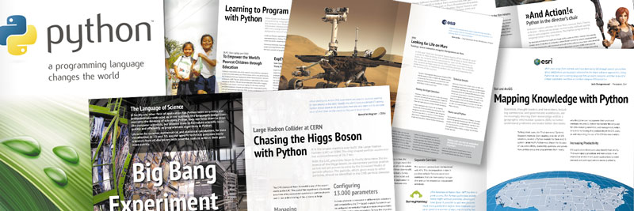

Curso de Python para ñoños
¡Los cupos irán a sorteo! Anotate. Si no entrás en el cupo para en esta edición, quedás anotado para la próxima que será muy pronto.
La demanda nos desbordó. En menos de 2 dias tenemos inscriptos para llenar dos veces el laboratorio que tenemos disponible! Algunos ya están averiguando la disponibilidad del Estadio Kempes para hacer el próximo.
Como recién hoy (martes 7 de abril) se realizó la difusión oficial desde FaMAF, la decisión de los organizadores es permitir la inscripción de todos los interesados y hacer un sorteo de las 25 plazas aranceladas y otro para las 15 plazas gratuitas reservadas para estudiantes de grado de FaMAF.
La justificación de un sorteo en vez de tomar el orden de inscripción la dió el Dr. Nicolás Wolovick, que junto al Dr. Pedro Pury fueron los gestores para el curso se oficializara, con un argumento democráticamente ñoño:
Estar conectado 24/7 por 3G, recibir el tweet, e inscribirse, no es justo, es una condición de posibilidad que no todos tienen. La distribución uniforme es la que mayor entropía tiene :)
Si estás interesado, es importante que te inscribas a través del formulario. Así tendremos una lista bien grande de "argumentos" para reeditar el curso lo más pronto posible.
Otra posibilidad es que averigües hagas lobby en tu empresa o laboratorio sobre la posibilidad de realizar el curso in house y, si tienen interés, lo charlamos.

A partir del 29 de abril voy a dar el curso Introducción a Python para ciencias e ingenierías en la Facultad de Matemática, Astronomía y Física (FaMAF) de la Universidad Nacional de Córdoba.
Este curso es una versión revisada y extendida del que dí en la ScipyCon Argentina 2014 y durará 8 clases de 2hs cada una. Será los miércoles de 18hs a 20hs en el laboratorio de computación de la facultad. No hace falta contar con equipo propio y el único pre-requisito es tener nociones básicas de programación en cualquier lenguaje.
El costo del curso es $400. Hay becas para estudiantes de grado de FaMAF.
Acá está el formulario de pre-inscripción (LOS CUPOS IRAN A SORTEO).
El curso está reconocido como Curso de Extensión de FaMAF (Res. HCD 107/2015) y se entregarán certificados oficiales a quienes completen asistencia y participación.
Atención Los cupos son muy limitados!
Introducción
En las últimas décadas la computación se ha convertido en un pilar de la ingeniería y la investigación científica. En la mayoría de las áreas, el trabajo computacional es un complemento fundamental de la experimentación tradicional y de la teoría, y cada vez más publicaciones involucran cálculos numéricos, simulaciones y modelado computacional.
Frecuentemente, la tarea de los profesionales involucra el uso de aplicaciones específicas que requieren un gran trabajo de procesamiento de los datos de entrada y un post-procesamiento de los resultados utilizando otras herramientas.
Otras veces se desarrolla software ad hoc en lenguajes de programación tradicionales en la ciencia como Fortran, muy limitados para el pre-procesamiento y la visualización de datos y cuyo desarrollo se torna improductivo por los tiempos inherentes al ciclo de edición, compilación, ejecución y depuración.
Existen nuevos entornos y lenguajes de programación que permiten un flujo de trabajo dinámico e interactivo, mucho más armónico y útil en el contexto de la "experimentación computacional". Un entorno interactivo permite a los científicos e ingenieros manipular datos, probar algoritmos y visualizar resultados de una manera integrada y versátil, sin limitaciones impuestas por una interfaz de usuario ni la laboriosa y frágil tarea de hacer interactuar distintos sistemas.
Este curso brindará una introducción al lenguaje de programación Python y a las herramientas fundamentales del "ecosistema científico" (IPython, Numpy, Matplotlib, Scipy, Sympy, entre otros) que conforman un entorno de programación interactivo de vanguardia, simple, libre, gratuito y multiplataforma.
Sobre el docente
Martín Gaitán es Ingeniero en Computación por la Universidad Nacional de Córdoba (2011). Socio fundador de Phasety, emprendimiento incubado en la UNC que desarrolla software de simulación especializado para la industria del petróleo y el gas. Pythonista desde hace casi una década, es especialista en el framework web Django y cree entender las necesidades del software científico. Es frecuente orador en eventos de software libre. Hincha de Boca y fundamentalista del locro. Más información en su blog.
Programa
- Clase 1:
- Instalación de entorno para Python en Windows/Linux. Modos de usar Python. Anaconda. Introducción a Ipython Notebook Tipos de datos: enteros, floats, complejos, strings. Estructuras de datos: listas, tuplas, diccionarios, conjuntos. Packing, indexing, slicing, etc. Conceptos de mutabilidad/inmutabilidad, secuencia, iterador Control de flujo: if, for, while, manejo de excepciones.
- Clase 2:
- Funciones: definición, argumentos posicionales y nominales. Sentencia yield. Funciones incorporadas: zip, range, enumerate, etc. Manejo de I/O: lectura y escritura de archivos.
- Clase 3:
- Estructura de proyectos: módulos, paquetes, importación. Paseo por la biblioteca estandar: math, CSV, json, pickle Conceptos básicos de programacion orientada a objetos. Introduccion a Matplotlib y Numpy.
- Clase 4:
- Numpy: introducción al objeto Array. Slicing extendido, métodos y funciones importantes, importación de datos. Aplicación de Numpy en algebra lineal. Resolución de sistemas de ecuaciones lineales. Matplotlib: generación de gráficos cartesianos continuos, puntos, histogramas.
- Clase 5:
- Vectorización de funciones con Numpy. Matplotlib avanzado: API orientada a objetos. Manipulación del formato y apariencia. Gráficos 3D, otros tipos de gráficos 2D. Introducción a Scipy: algoritmos para estadística, interpolación, regresión lineal, integración, etc.
- Clase 6:
- Python como "lenguaje pegamento". Integración con Fortran a través de F2Py. Herramienta "fortran-magic". Paso de argumentos escalares, arrays, output implícito, manipulación de signatura. Introducción a otras herramientas de optimización: Cython y Numba.
- Clase 7:
- Sympy: Python para matemática simbólica.
- Clase 8:
- Otras herramientas del "ecosistema científico" de Python. Entornos virtuales. Instalación de otros paquetes. Widgets de IPython Notebook. Exportación de documentos.
El código de este artículo está disponible en github. ¿Encontraste un error? Por favor, enviame un pull request.
Comentarios
Comments powered by Disqus